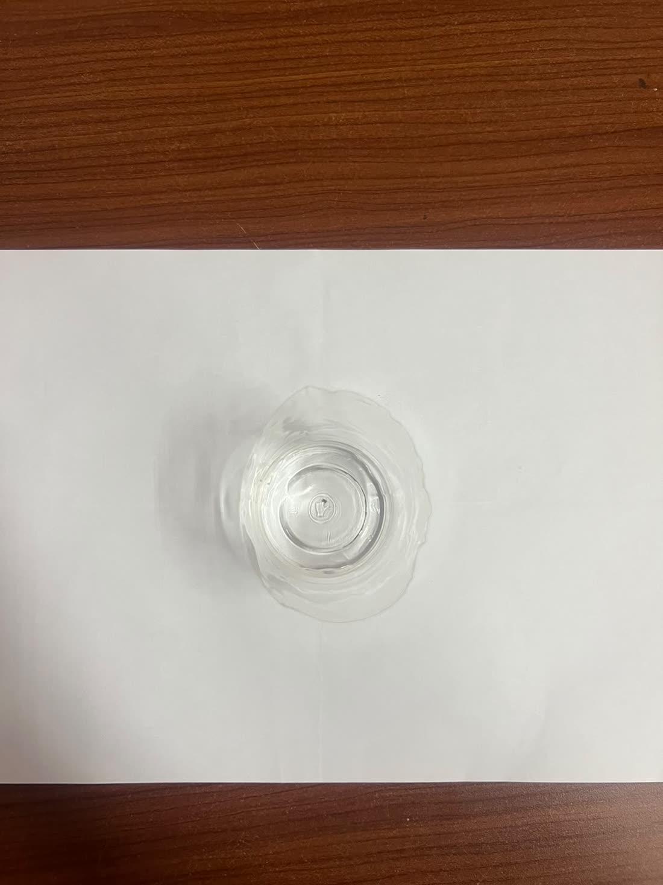
0 mg/L
Subtema B: Pengelolaan Sampah dan Ekonomi Sirkular. Bidang strategis: Energi. Pemilik masalah: DLH Kota Surakarta. Mitra: Putri Pratiwi Batik. Lokasi pilot: Kampung Batik Laweyan, Solo.
Tim Institut Teknologi Bandung: Muhammad Wildan Gifari (ketua), M Faza Dzil Ikram, Jeva Steve Sinaga, Alkindi Bintang Akhsan, Abiyyu Ariz Wibowo, dan Ammar Abdurrahim. November 2026.
SOBAT adalah unit elektrokoagulasi 50 liter per batch dengan pelat besi yang dipasang langsung di tempat perajin dan ditenagai panel surya. Sensor optik membaca warna air, lalu ESP32 menghentikan arus begitu warna mencapai baku mutu 200 Pt-Co. Unit tetap bekerja tanpa internet, dan setiap batch tercatat di dashboard.
Saat ini perangkat lunaknya (simulasi, kontroler, model AI, dashboard, dan firmware ESP32) sudah berjalan. Kami juga sudah menguji elektrokoagulasi skala gelas sebanyak dua batch dengan larutan pewarna batik. Unit 50 L belum dirakit dan belum diuji dengan limbah batik asli. Kami memperkirakan posisi awal di TKT 4 dan menargetkan TKT 5 sampai 6 lewat uji coba di lokasi mitra.
Dokumen ini menjawab tiga pertanyaan:
Agar jelas asal setiap angka, kami memberi label data uji untuk hasil uji skala gelas, simulasi untuk keluaran model simulasi, dan perkiraan untuk angka yang belum terukur langsung.
Limbah cair batik masih menjadi masalah lingkungan di banyak sentra batik. Industri batik nasional mencakup 5.946 IKM di 201 sentra dan menyerap sekitar 200 ribu tenaga kerja [1], tetapi IPAL komunal yang disediakan pemerintah belum menjangkau semuanya. Di Pekalongan, empat IPAL komunal hanya mampu mengolah 27 sampai 30 persen limbah batik kota, dan sisanya berpotensi masuk ke sungai [2]. Limbah ini juga beracun: limbah yang sudah diencerkan hingga 0,2 sampai 8,6 persen masih menyebabkan kematian separuh ikan uji dalam 96 jam [3][4].
Di Surakarta keadaannya serupa. Di Kampung Batik Laweyan baru 22 dari 41 industri batik yang terhubung ke IPAL komunal [5]. Sebagian sisanya terkendala lahan yang lebih rendah dari IPAL sehingga limbah tidak dapat dialirkan [5][6]. Limbah yang tidak terolah, dengan COD hingga 77 kali baku mutu [7][8], masuk ke Kali Jenes dan Kali Premulung, yang oleh DLH Kota Surakarta digolongkan tercemar berat (kelas IV) [9][10].
Dampaknya juga terasa secara ekonomi. Di DAS Citarum, kerugian akibat pencemaran tiga pabrik tekstil diperkirakan sekitar Rp11,4 triliun selama 2004 sampai 2015 [11]. Di Surakarta, pencemaran Bengawan Solo oleh limbah ciu dan tekstil [12] dapat menaikkan biaya operasional PDAM hingga dua kali lipat [13] dan berdampak pada 6.000 sampai 18.000 pelanggan saat instalasi pengolahan air dihentikan [14][15].
| Masalah | UMKM batik yang belum terlayani IPAL, atau terhubung ke IPAL yang tidak dapat diandalkan, tidak memiliki alat pengolah limbah yang bisa dipasang di tempat produksi. Akibatnya limbah berwarna pekat dengan COD jauh di atas baku mutu dibuang ke sungai. |
|---|---|
| Sasaran pengguna | Usaha batik dan pewarnaan tekstil skala kecil sampai menengah. Sasaran awal adalah usaha batik kecil di Laweyan yang bersedia menyediakan sampel dan lokasi uji, serta mitra kami, Putri Pratiwi Batik. |
| Bukti kebutuhan | Data cakupan IPAL Laweyan [5][6], penelitian kondisi IPAL dan kualitas limbah di Laweyan [7], serta status sungai tercemar berat [9][10]. Bukti ini akan divalidasi lewat wawancara minimal lima calon pengguna dan uji sampel dari minimal dua sumber limbah. |
| Kebutuhan pengguna | Unit yang dipasang di lokasi produksi, menyesuaikan proses dengan limbah yang berubah-ubah, tidak memerlukan operator ahli, dan mencatat mutu serta biaya pengolahan setiap batch. |
| Target kinerja | Warna turun ≥90% dan ≤200 Pt-Co, TSS turun ≥85%, pH 6-9, energi ≤5 kWh/m³, dan pembacaan sensor optik terhadap uji Pt-Co laboratorium dengan R² ≥0,9. |
| Potensi hilirisasi | Pengadaan oleh DLH atau Pemkot untuk UMKM di area yang tidak terjangkau IPAL, pendanaan CSR, sewa unit, atau satu unit untuk beberapa perajin bertetangga. |
Rancangan awal SOBAT kami susun dengan model simulasi. Model itu sudah lengkap, tetapi beberapa angka kuncinya, seperti seberapa cepat warna hilang per muatan listrik dan berapa energi yang dibutuhkan per m³, masih diambil dari literatur. Analisis sensitivitas kami menunjukkan hasil simulasi bisa berubah besar bila angka tersebut tidak tepat. Literatur pun memberi angka energi yang lebih tinggi dari simulasi kami: Fadzli dkk. melaporkan 5,26 kWh/m³ untuk elektroda aluminium [16]. Karena itu kami melakukan uji skala gelas dengan tujuan:
Uji yang sudah dilakukan terdiri atas kalibrasi warna, batch 1 (uji utama), dan batch 2 (pengulangan dengan pengambilan sampel berkala).
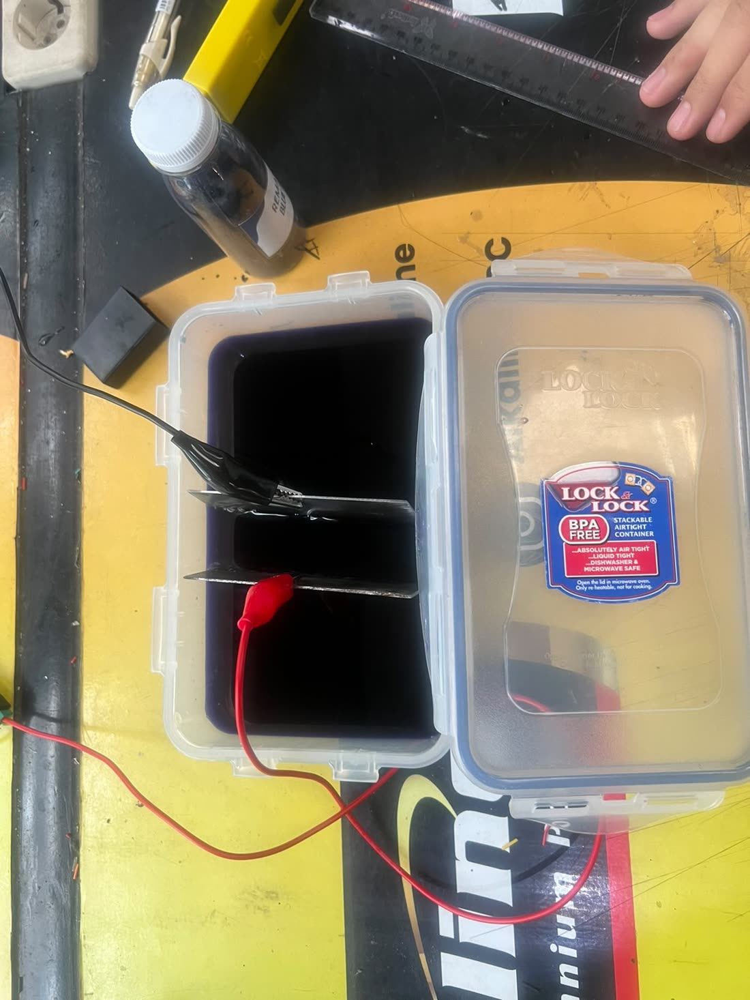
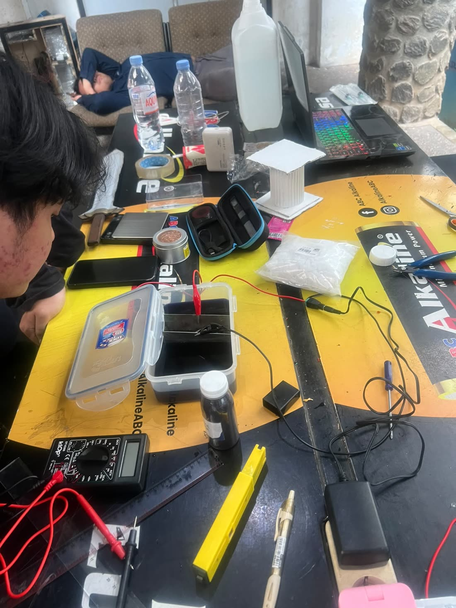
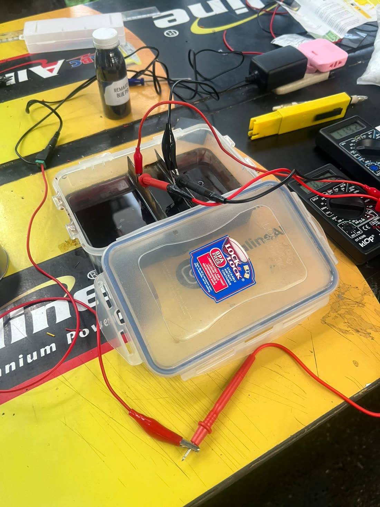
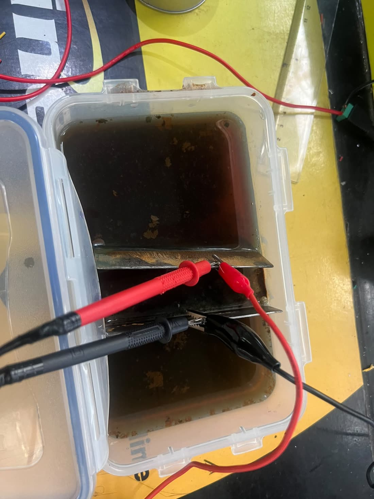
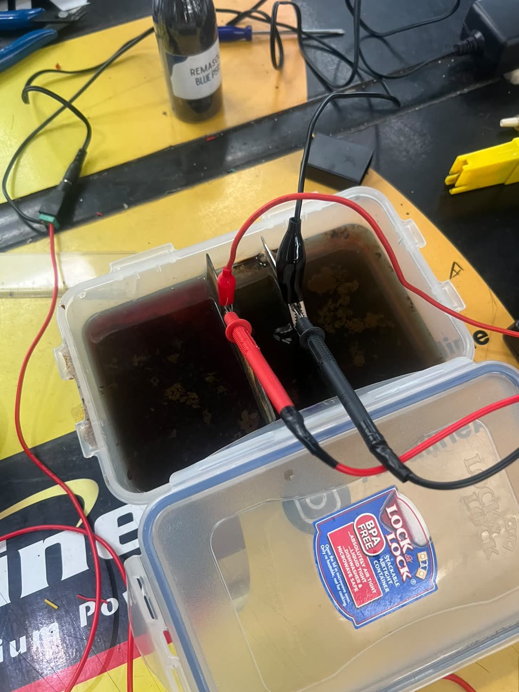
| Parameter | Nilai |
|---|---|
| Volume larutan | 500 mL per batch |
| Pewarna | Remazol Black B (Reactive Black 5), 100 mg/L |
| Elektrolit | Na₂SO₄ 2 g/L |
| pH awal | sekitar 7,7 (tanpa penyesuaian) |
| Elektroda | 2 pelat besi 5×10 cm, tebal 1-2 mm, luas aktif ±40 cm², jarak antarpelat 4 cm |
| Catu daya | adaptor 12 V 2 A |
| Wadah | wadah plastik bening, ±500 mL |
| Pengukuran | arus dengan multimeter seri, tegangan di terminal, pH dengan kertas pH dan pH meter |
| Sampel | batch 1: 5 mL per titik; batch 2: 20 mL per titik pada menit 0, 2, 5, 10, 15, dan 30 |
Karena volume dan jarak pelat pada uji ini berbeda dari unit 50 L, hasilnya kami nyatakan dalam muatan listrik per liter (C/L), bukan waktu. Dengan begitu hasil skala gelas dapat dibandingkan dengan unit yang lebih besar.
Muatan per liter sampai titik ke-n. Pada batch 2, VL adalah volume efektif yang berkurang 20 mL setiap kali sampel diambil:
qn = Σ Ii Δti / VL [C/L]
Energi per volume dan massa besi terlarut menurut hukum Faraday:
E = Σ Vi Ii Δti / (3,6×106 · VL/1000) [kWh/m³]
mFe = Σ I Δt · 55,85 / (2 × 96.485) [g]
Absorbansi semu dari foto per kanal warna, dinormalisasi terhadap kertas putih di foto yang sama, serta model penurunan warna yang akan dicocokkan:
A = −log10(Ssampel / Saquadest) C(q) = Csisa + (C0 − Csisa) e−kq
Kami belum memiliki spektrofotometer, sehingga warna diukur dari foto. Sampel 20 mL dituang ke gelas bening berdasar rata di atas kertas HVS putih, lalu difoto dari atas dengan lampu meja yang sama, tanpa flash atau HDR. Warna diambil dari bagian dalam cairan agar logo di dasar gelas tidak ikut terbaca. Deret kalibrasi dibuat dari larutan induk 150 mg/L.

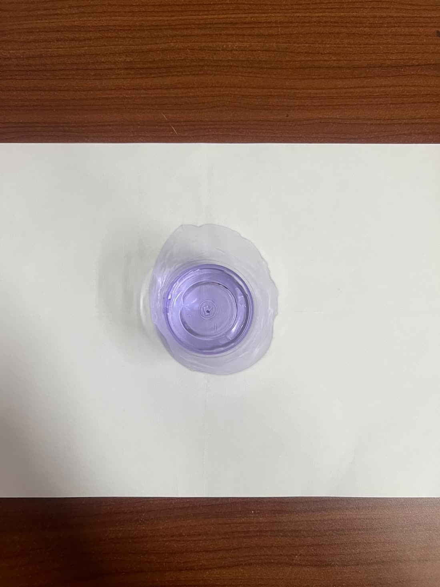
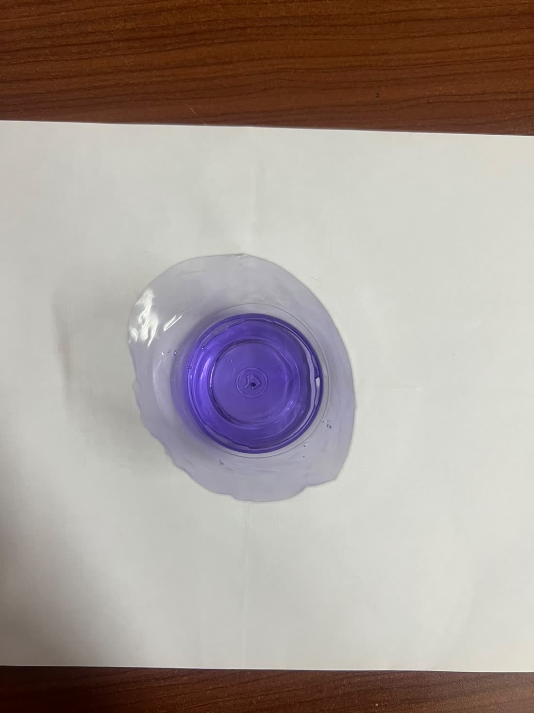
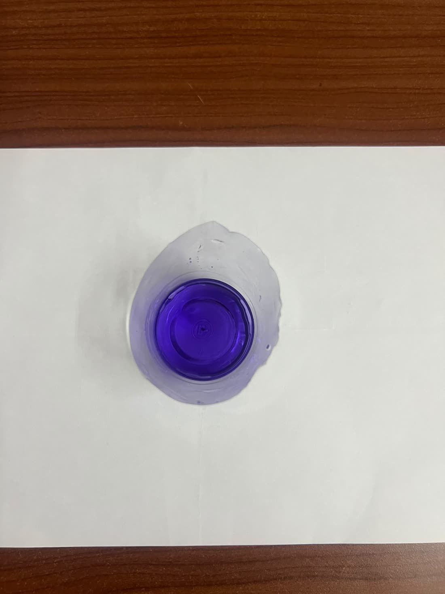
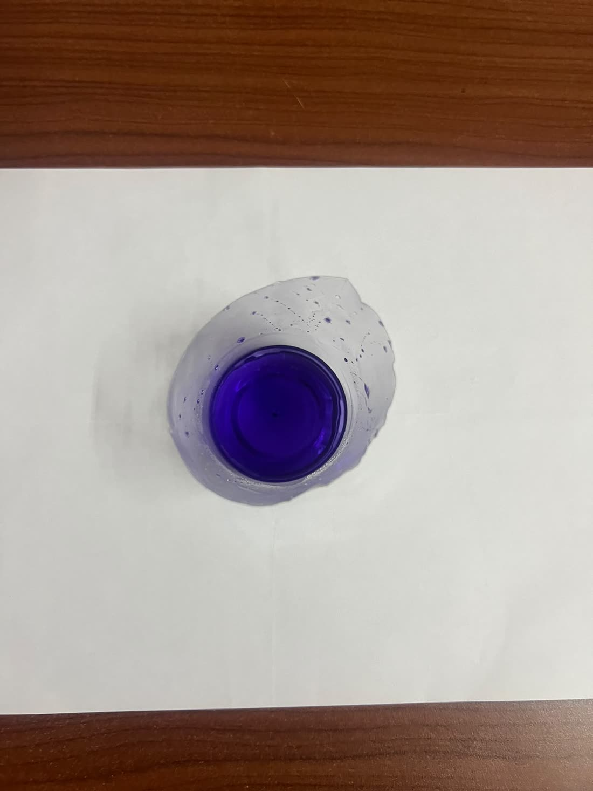
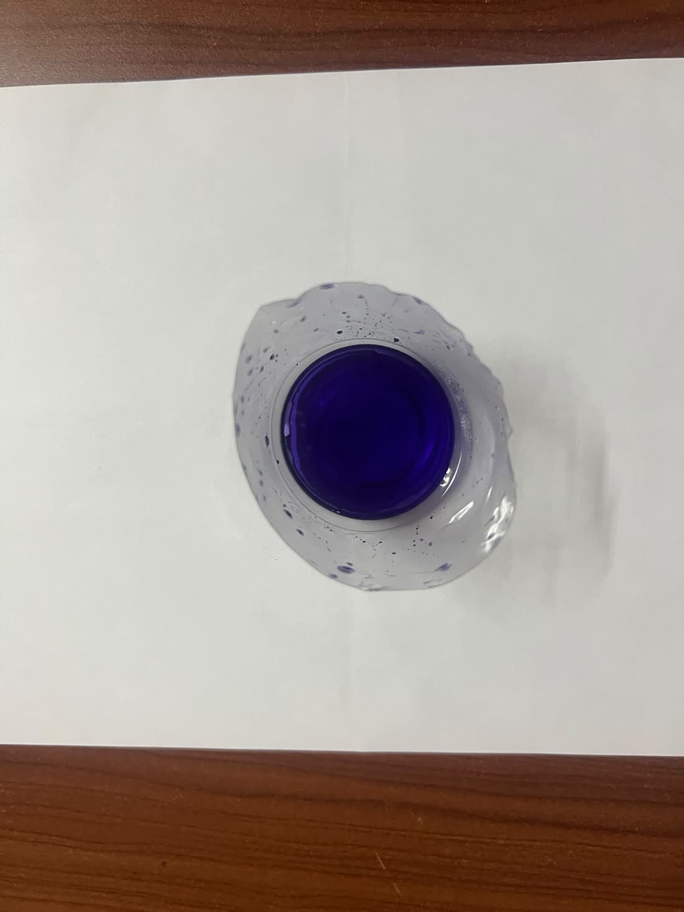
Gambar 6. Deret kalibrasi dari aquadest sampai konsentrasi tertinggi.
| mg/L | Absorbansi R | Warna di foto |
|---|---|---|
| 0 | 0 | bening (aquadest) |
| 15 | 0,128 | ungu sangat muda |
| 37,5 | 0,371 | ungu muda |
| 75 | 0,601 | ungu |
| 112,5 | 0,889 | ungu kebiruan pekat |
| 150 | 1,160 | biru-ungu sangat pekat |
Gambar 7. Absorbansi semu kanal merah naik hampir lurus terhadap konsentrasi.
Kanal merah (R) kami gunakan karena nilainya naik hampir linear terhadap konsentrasi. Kanal hijau (G) sudah jenuh sejak 75 mg/L sehingga 112,5 dan 150 mg/L tidak dapat dibedakan. Sebagai pengecekan, sampel awal batch 2 yang dibuat 100 mg/L terbaca 96,7 mg/L, sehingga kalibrasi dan pengencerannya konsisten.
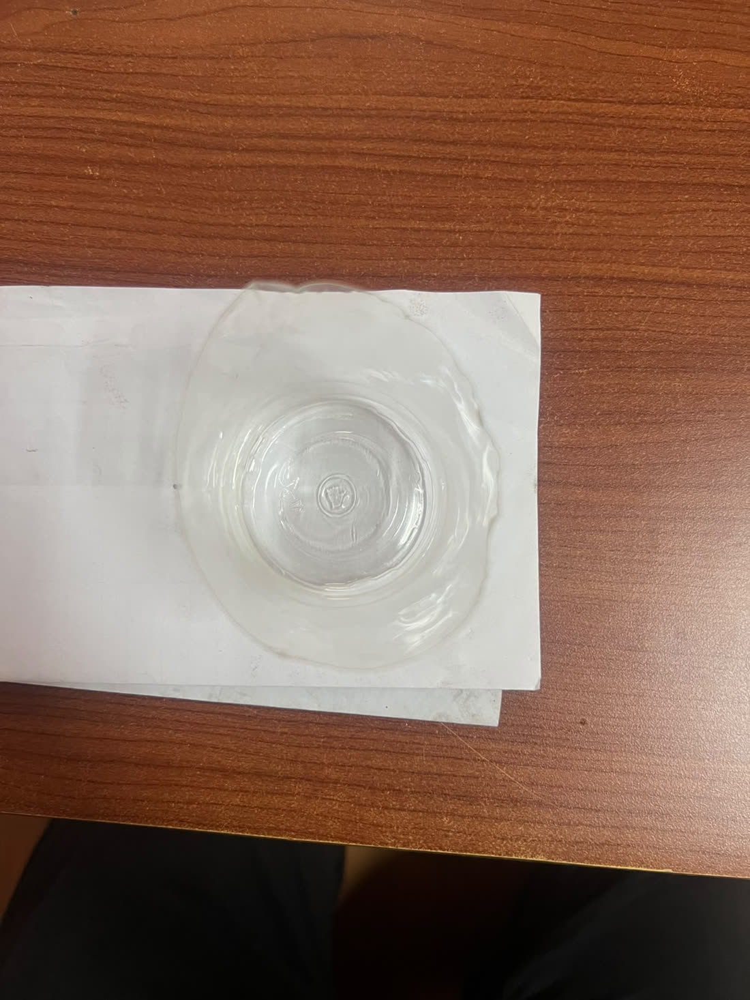
Larutan 500 mL dengan pH awal sekitar 7,7. Perhitungan q dan E memakai VL = 0,5 L karena sampel yang diambil hanya 5 mL per titik.
| Menit | Arus (A) | Tegangan (V) | q (C/L) | E (kWh/m³) |
|---|---|---|---|---|
| 0 | 0,42 | 11,98 | 0 | 0 |
| 2 | 0,53 | 11,90 | 114 | 0,38 |
| 5 | 0,53 | 11,91 | 305 | 1,01 |
| 10 | 0,53 | 11,92 | 623 | 2,06 |
| 15 | 0,56 | 11,92 | 950 | 3,15 |
| 20 | 0,57 | 11,90 | 1289 | 4,26 |
| 30 | 0,57 | 11,90 | 1973 | 6,52 |
Larutan diencerkan ke 100 mg/L dan pelat diamplas ulang. Pada setiap titik diambil sampel 20 mL untuk difoto; sampel menit 0 dikembalikan ke reaktor setelah difoto.
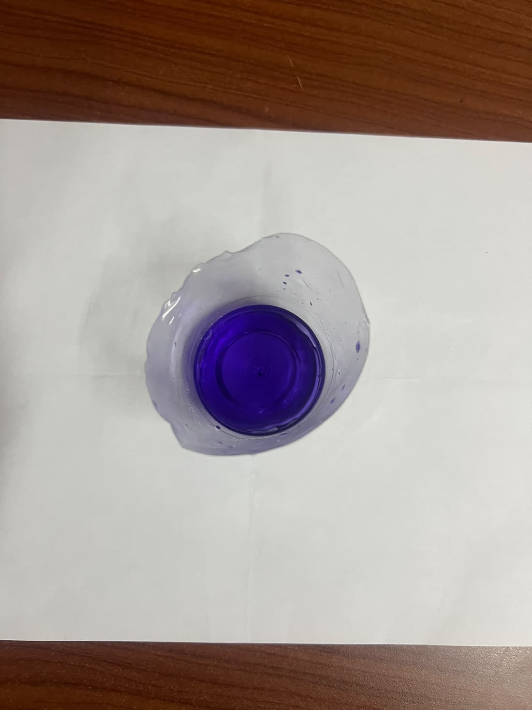
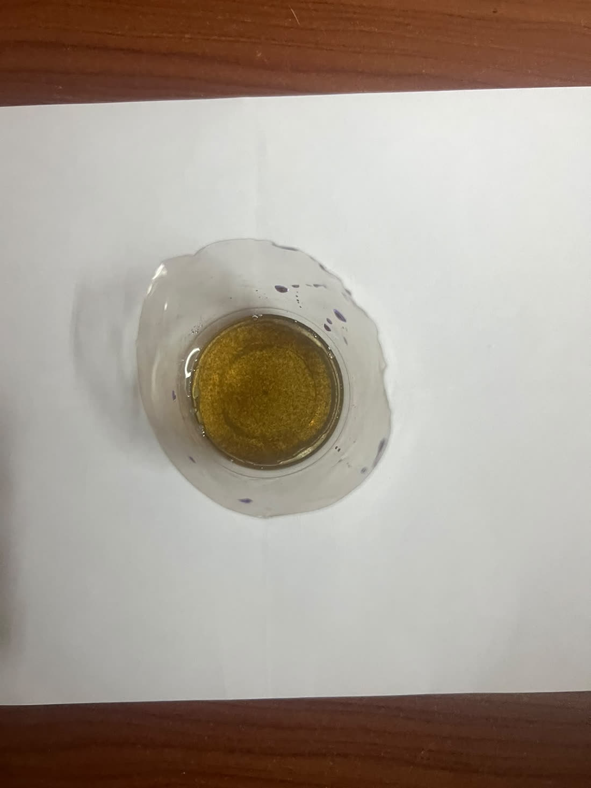
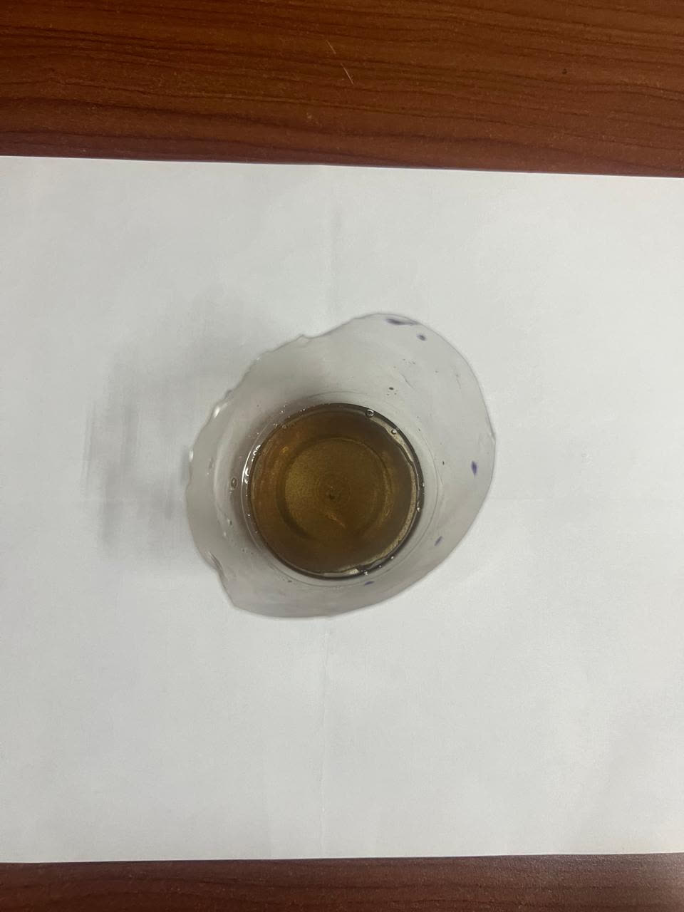
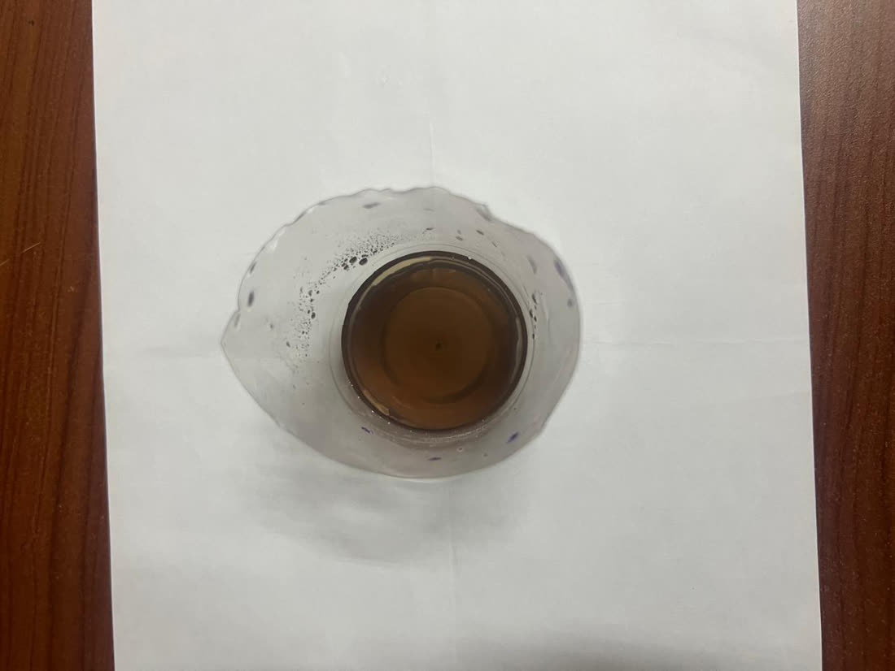
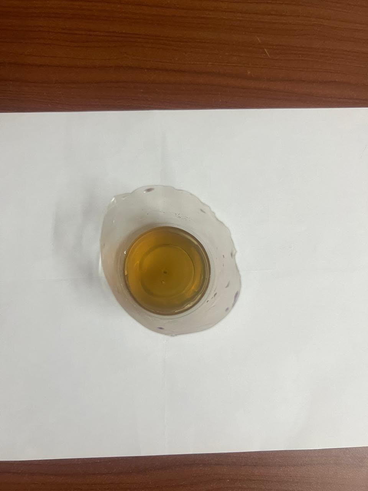
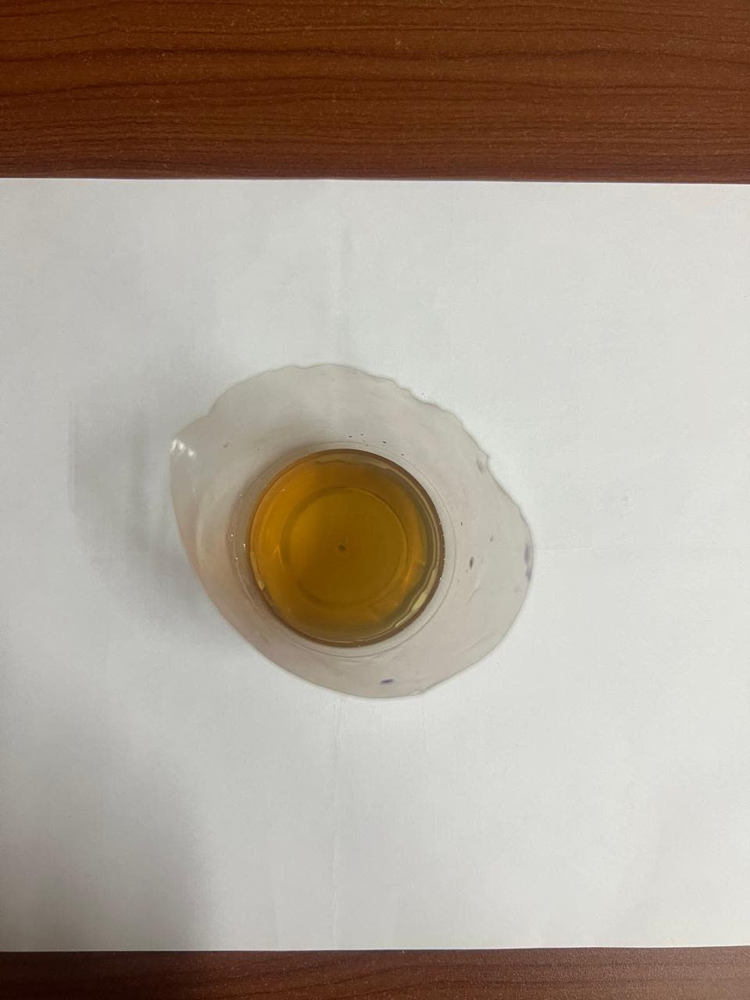
Gambar 9. Sampel batch 2 dari menit 0 sampai 30. Warna ungu hilang sejak menit 2; menit 5 dan 10 masih keruh oleh partikel besi; menit 15 dan 30 kuning jernih.
| Menit | Arus (A) | Tegangan (V) | VL (mL) | q (C/L) | E (kWh/m³) | Warna di foto | Sisa pewarna perkiraan | Keandalan |
|---|---|---|---|---|---|---|---|---|
| 0 | 0,42 | 11,88 | 500 | 0 | 0 | biru-ungu pekat | 100% (96,7 mg/L) | valid |
| 2 | 0,46 | 11,86 | 500 | 105,6 | 0,35 | kuning-cokelat, ada partikel | ≈13% | rendah |
| 5 | 0,42 | 11,88 | 480 | 270,6 | 0,89 | cokelat gelap, keruh | ≈27% | tidak dipakai |
| 10 | 0,43 | 11,90 | 460 | 547,8 | 1,81 | cokelat gelap, keruh | ≈35% | tidak dipakai |
| 15 | 0,40 | 11,93 | 440 | 830,8 | 2,74 | kuning jernih | ≈10% | cukup |
| 30 | 0,36 | 11,90 | 420 | 1645 | 5,44 | kuning jernih | ≈0% (diasumsikan) | cukup |
Setelah arus dialirkan, sampel berubah dari ungu menjadi kuning-cokelat. Warna ini sebagian besar berasal dari besi terlarut (Fe(III)), bukan pewarna, tetapi kamera ikut membacanya. Bila dibaca langsung dari kanal merah, menit 15 dan 30 seolah masih menyisakan sekitar 23% warna, padahal sebagian besar kemungkinan adalah besi.
Untuk memisahkannya, kami membandingkan ketiga kanal warna dengan anggapan bahwa sampel menit 30 sudah bebas pewarna. Hasilnya adalah kolom "sisa pewarna" pada Tabel 5. Anggapan ini masuk akal, tetapi masih perlu dibuktikan.
Sampel menit 5 dan 10 masih keruh oleh partikel besi yang melayang, sehingga terbaca lebih pekat daripada menit 2, sesuatu yang tidak mungkin terjadi secara fisik. Karena itu kedua titik tersebut tidak kami pakai, dan kurva lengkap warna terhadap muatan beserta konstanta lajunya belum dapat ditentukan dari data ini.
| Aspek | Batch 1 | Batch 2 | Keterangan |
|---|---|---|---|
| Arus awal | 0,42 A | 0,42 A | Kondisi awal berulang dengan baik |
| Tegangan | 11,90-11,98 V | 11,86-11,93 V | Catu daya stabil |
| Arus selama proses | naik ke 0,57 A | turun ke 0,36 A | Volume batch 2 berkurang karena pengambilan sampel |
| pH akhir | 10,1 | 10,2 | Kenaikan pH konsisten di kedua batch |
| Total muatan (besi teoretis) | 986 C (0,285 g) | 726 C (0,21 g) | Belum diverifikasi dengan penimbangan |
| q dan E pada menit 15 | 950 C/L, 3,15 kWh/m³ | 831 C/L, 2,74 kWh/m³ | Mirip; pada titik ini sampel batch 2 sudah kuning jernih |
| Pengukuran warna | tidak ada | 6 foto terkalibrasi | Hanya batch 2 yang dapat dianalisis warnanya |
| Ukuran | Uji skala gelas | Simulasi | Target | Status |
|---|---|---|---|---|
| Energi sampai warna turun ±90% | antara 0,35 dan 2,7 kWh/m³ | 0,99 kWh/m³ | ≤ 5 kWh/m³ | dalam rentang, belum pasti |
| Muatan sampai warna turun ±90% | antara 106 dan 831 C/L; perkiraan 100-300 C/L | - | diukur | perkiraan |
| Penurunan warna | sisa ±10% atau kurang pada 831 C/L | 95% batch lolos 200 Pt-Co | ≥ 90% dan ≤ 200 Pt-Co | belum diukur dalam Pt-Co |
| pH keluaran | naik ke 10,1-10,2 | - | 6-9 | di atas batas |
| Ketepatan sensor | foto ponsel: 100 mg/L terbaca 96,7 mg/L | - | R² ≥ 0,9 terhadap Pt-Co | belum diuji terhadap Pt-Co |
| Penurunan TSS | belum diuji | - | ≥ 85% | belum diuji |
Tabel 7 juga menunjukkan bahwa pH keluaran berada di atas batas baku mutu 6-9. Pada unit sebenarnya kemungkinan dibutuhkan tahap penetralan, dan hal ini akan kami sertakan dalam pengujian berikutnya.
Pada uji skala gelas, warna larutan pewarna 100 mg/L turun hingga tersisa sekitar 10% atau kurang pada muatan sekitar 830 C/L (sekitar 2,7 kWh/m³), di bawah target 5 kWh/m³. Penurunan ini diperkirakan sudah tercapai pada muatan yang lebih rendah; titik tepatnya akan ditentukan pada uji lanjutan.
Angka 830 C/L adalah batas atas yang didukung sampel jernih, bukan titik 90% yang pasti.
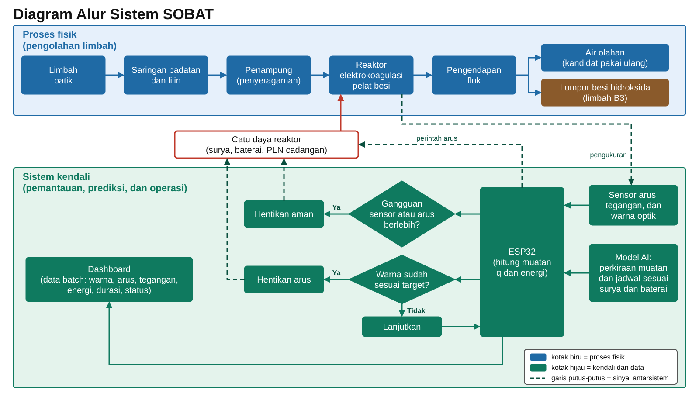
Jalur proses fisik (per batch)
Jalur kendali dan data
Prinsip kimianya: arus melarutkan besi dari anoda (Fe → Fe²⁺ + 2e⁻). Besi bereaksi dengan ion OH⁻ dari katoda dan oksigen membentuk flok Fe(OH)n yang mengikat zat warna dan partikel. Gelembung hidrogen dari katoda mengangkat sebagian flok ke permukaan, seperti yang terlihat pada Gambar 5.
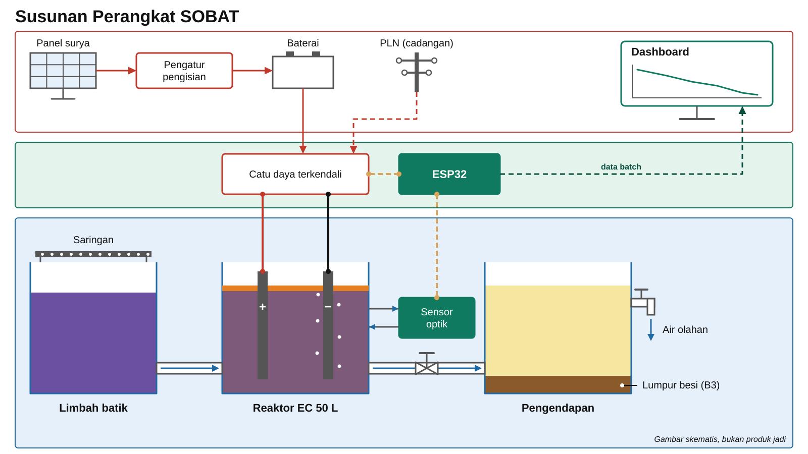
| Komponen | Fungsi | Status |
|---|---|---|
| Reaktor elektrokoagulasi | ±50 L per batch, pelat besi, catu arus terkendali | diuji skala gelas (500 mL) |
| Sensor optik warna | Membaca warna di ruang ukur gelap dan menjadi dasar penghentian arus | prinsip diuji dengan foto ponsel |
| ESP32 | Kendali lokal, perhitungan muatan dan energi, pengaman, penyimpanan data saat offline | firmware selesai, belum diuji pada papan |
| Panel surya dan baterai | Sumber listrik utama, dengan PLN sebagai cadangan | dirancang dengan simulasi |
| Model AI | Perkiraan muatan dan jadwal batch sesuai ketersediaan energi | dilatih dari data simulasi; akan dilatih ulang dengan data uji |
| Dashboard | Riwayat batch, energi, dan laporan untuk DLH | berjalan (lihat 3.4) |
Estimasi simulasi untuk unit penuh simulasi: energi 0,99 kWh/m³, besi 119 g/m³, lumpur 1,77 kg/m³, biaya sekitar Rp7.700/m³, dan 95% batch memenuhi target warna.
Yang membedakan SOBAT: arus dihentikan berdasarkan pengukuran warna, bukan waktu tetap; energi setiap batch tercatat; kendali berjalan di lokasi tanpa internet; dan setiap batch dapat ditelusuri melalui dashboard.
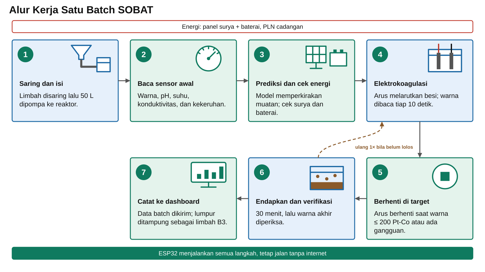
Dashboard sudah berjalan dan dapat dibuka di komputer maupun ponsel; kodenya tersedia di repositori tim [17]. Angka pada tangkapan layar berikut berasal dari simulasi, dan dashboard menandainya dengan label "Data simulasi".
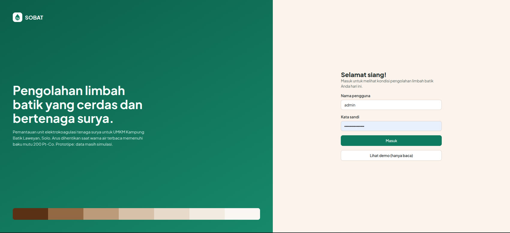
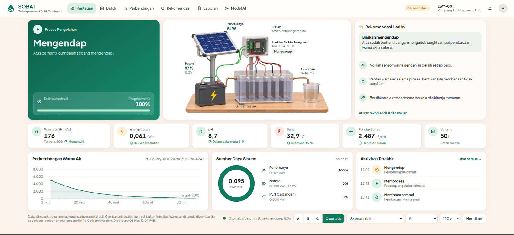
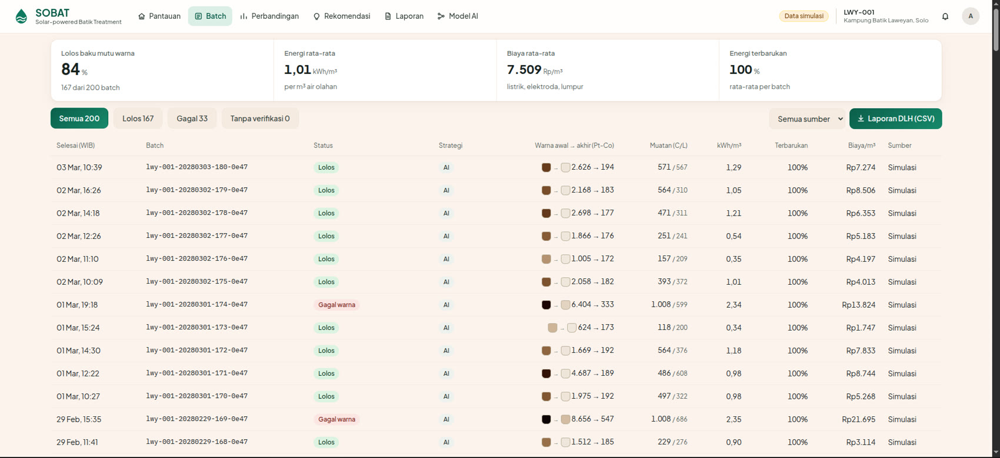
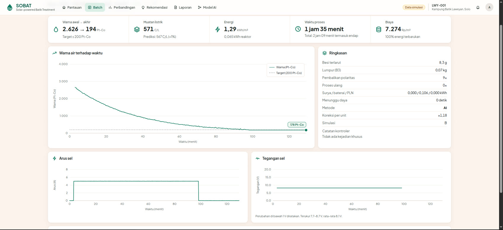
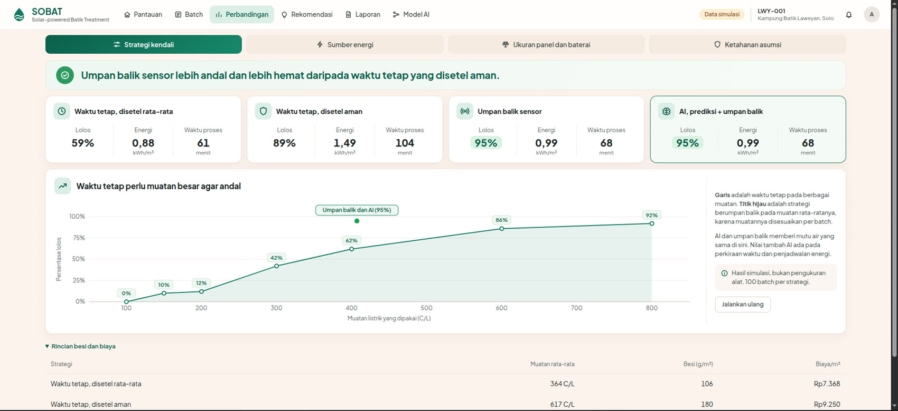
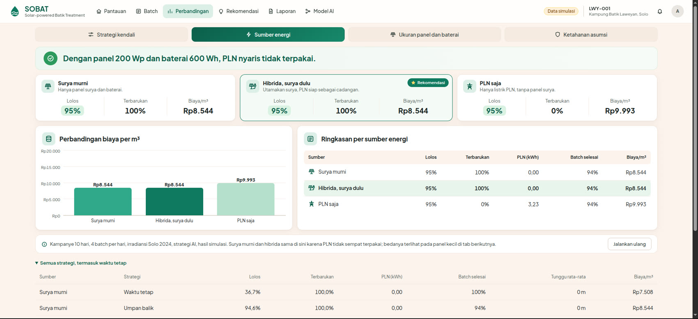
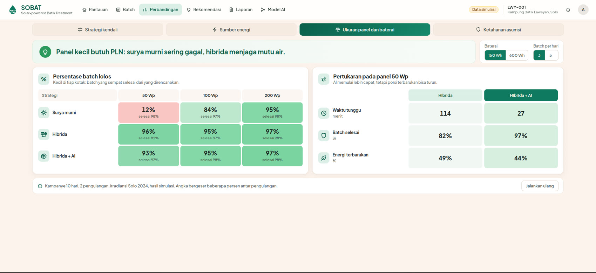
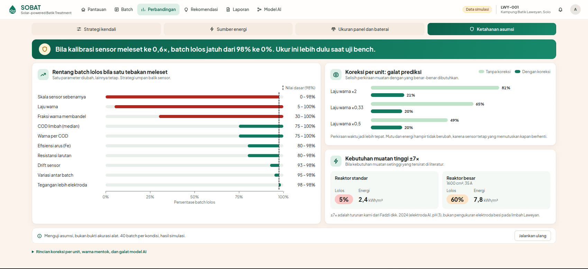
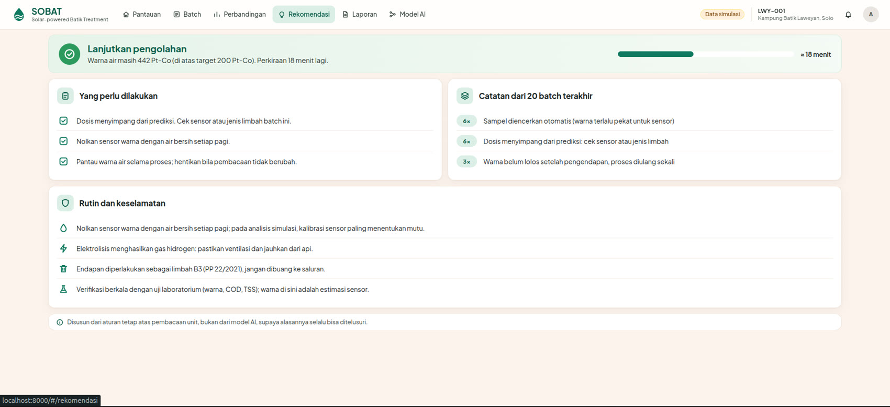
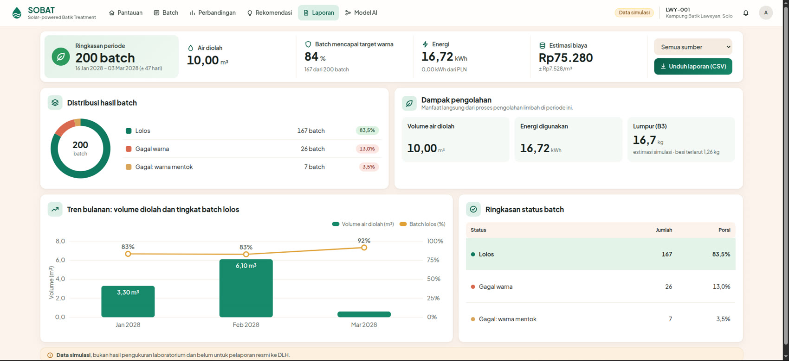
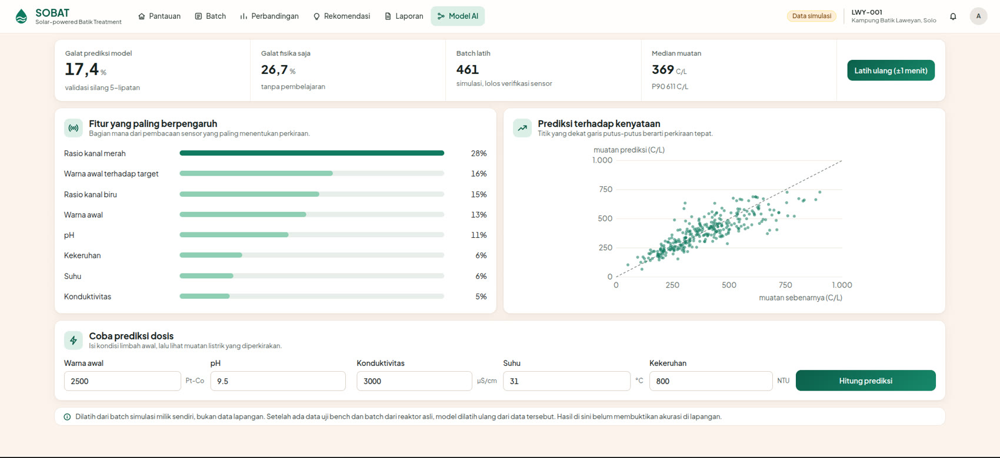
Hipotesis awal kami terbukti pada skala gelas: reaksi elektrokoagulasi dengan pelat besi dapat mengurangi warna larutan pewarna batik. Pada dua batch, warna ungu hilang secara visual sejak menit kedua, flok besi terbentuk dan terangkat sesuai teori, dan pada muatan sekitar 830 C/L (sekitar 2,7 kWh/m³) cairan menjadi kuning jernih dengan sisa pewarna sekitar 10% atau kurang. Energi tersebut masih di bawah target 5 kWh/m³, dan estimasi simulasi kami (0,99 kWh/m³) berada dalam rentang hasil uji.
Hasil ini membuktikan prinsip kerja untuk satu jenis pewarna pada skala gelas. Untuk menyatakan SOBAT mampu mengolah limbah batik secara umum, masih dibutuhkan uji dengan pewarna lain dan limbah batik asli, uji laboratorium Pt-Co, COD, dan TSS, serta penerapan kendali otomatis dengan ESP32 dan sensor terpasang. Ketiganya sudah masuk dalam rencana kami menuju TKT 5 sampai 6.
[1] ANTARA, "Kemenperin sebut industri batik menyerap 200 ribu tenaga kerja," 26 Sep. 2024. https://www.antaranews.com/berita/4360315/kemenperin-sebut-industri-batik-menyerap-200-ribu-tenaga-kerja
[2] Pemerintah Provinsi Jawa Tengah, "Tambah IPAL, pelaku usaha batik didorong terapkan standar industri hijau." https://jatengprov.go.id/beritadaerah/tambah-ipal-pelaku-usaha-batik-didorong-terapkan-standar-industri-hijau/
[3] N. R. Juliardi AR, N. Andini, dan Yuliatin AS, "Analisis toksisitas limbah cair batik tulis dan bioconcentration factor ikan sepat (Trichogaster tricopterus)," Envirotek, vol. 12, no. 1, hlm. 19-26, 2020, doi: 10.33005/envirotek.v12i1.44.
[4] S. Oktavia dan C. Novi, "Acute toxicity of household-scale Lebak batik industrial wastewater on common carp," Biosfer: Jurnal Tadris Biologi, vol. 12, no. 2, hlm. 140-148, 2021, doi: 10.24042/biosfer.v12i2.9737.
[5] Validnews, "Mengawal bangkitnya batik agar minim residu." https://validnews.id/nasional/mengawal-bangkitnya-batik-agar-minim-residu
[6] Radar Solo, "Dorong penggunaan pewarna alami dan IPAL komunal di Kampung Batik Laweyan," 4 Agu. 2025. https://radarsolo.jawapos.com/solo/846389849/dorong-penggunaan-pewarna-alami-dan-ipal-komunal-di-kampung-batik-laweyan
[7] S. A. Ariani dkk., "Evaluasi IPAL komunal pada beberapa sentra batik di Kampung Batik Laweyan," Prosiding Kolokium Riset Mahasiswa, Universitas Muhammadiyah Surakarta, 2025. https://proceedings.ums.ac.id/korma/article/view/6701
[8] Kementerian LHK, Peraturan Menteri LHK Nomor P.16/MENLHK/SETJEN/KUM.1/4/2019 tentang Perubahan Kedua atas Permen LH Nomor 5 Tahun 2014 tentang Baku Mutu Air Limbah, 2019.
[9] Solopos, "Limbah industri batik cemari sungai-sungai di Solo," 2017. https://www.solopos.com/limbah-industri-batik-cemari-sungai-sungai-di-solo-856479
[10] Merdeka.com, "Limbah batik dominasi pencemaran sungai di Solo," 3 Okt. 2017. https://www.merdeka.com/peristiwa/limbah-batik-dominasi-pencemaran-sungai-di-solo.html
[11] Greenpeace Indonesia, Koalisi Melawan Limbah, dan Institute of Ecology Universitas Padjadjaran, "Konsekuensi tersembunyi: Valuasi kerugian ekonomi akibat pencemaran industri," 2016, dikutip dalam Mongabay Indonesia, 23 Mei 2016. https://www.mongabay.co.id/2016/05/23/masalah-citarum-masalah-kita-semua/
[12] detikJateng, "Bengawan Solo tercemar limbah ciu-tekstil, pengolahan air baku disetop," 21 Mei 2024. https://www.detik.com/jateng/berita/d-7351077/bengawan-solo-tercemar-limbah-ciu-tekstil-pengolahan-air-baku-disetop
[13] detikNews, "Pengolahan air Bengawan Solo disetop, PDAM Solo khawatirkan cadangan air minum," 9 Sep. 2021. https://news.detik.com/berita-jawa-tengah/d-5716197/pengolahan-air-bengawan-solo-disetop-pdam-solo-khawatirkan-cadangan-air-minum
[14] Kompas.com, "Bengawan Solo tercemar limbah ciu, diduga sudah berlangsung 5 tahun," 9 Sep. 2021. https://regional.kompas.com/read/2021/09/09/122705378/bengawan-solo-tercemar-limbah-ciu-diduga-sudah-berlangsung-5-tahun
[15] ANTARA, "PDAM Toya Wening Solo hentikan operasi pengolahan air karena limbah," 21 Des. 2023. https://www.antaranews.com/berita/3881784/pdam-toya-wening-solo-hentikan-operasi-pengolahan-air-karena-limbah
[16] J. Fadzli, S. W. Puasa, N. R. Nik Him, K. H. Ku Hamid, dan N. Amri, "Electrocoagulation: Removing colour and COD from simulated and actual batik wastewater," Desalination and Water Treatment, vol. 320, 100658, 2024, doi: 10.1016/j.dwt.2024.100658.
[17] Tim SOBAT, "UNS-Innovation-Hackathon-2026," repositori GitHub, 2026. https://github.com/Ajilaca/UNS-Innovation-Hackathon-2026
| Bahan atau alat | Keterangan |
|---|---|
| Pelat besi | 2 buah, 5×10 cm, tebal 1-2 mm, luas aktif ±40 cm², diamplas sebelum dipakai |
| Adaptor | 12 V 2 A, dengan penjepit buaya merah (+) dan hitam (−) |
| Multimeter | Dipasang seri untuk membaca arus; tegangan dibaca di terminal |
| Wadah reaktor | Wadah plastik bening, ±500 mL larutan |
| Pewarna | Remazol Black B (Reactive Black 5), 100 mg/L |
| Elektrolit | Na₂SO₄ 2 g/L |
| Pengukur pH | Kertas pH dan pH meter |
| Timbangan | Untuk menimbang pewarna dan elektrolit |
| Aquadest | Pelarut dan blanko kalibrasi |
| Pengukur warna | Ponsel, gelas bening berdasar rata, kertas HVS putih, dan lampu meja |